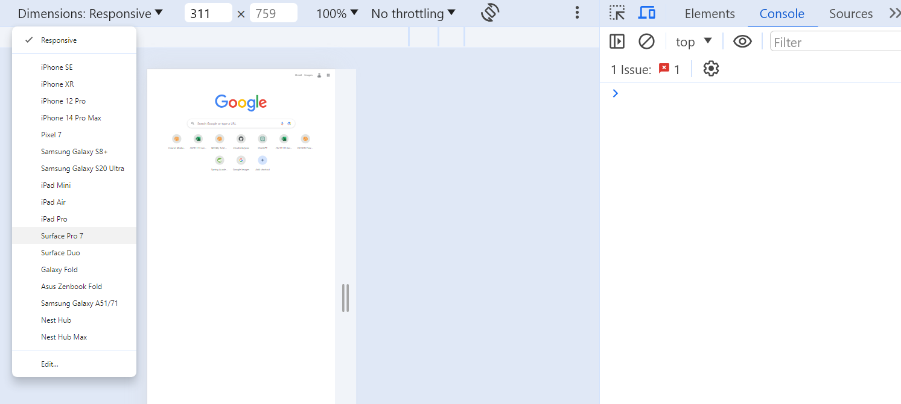
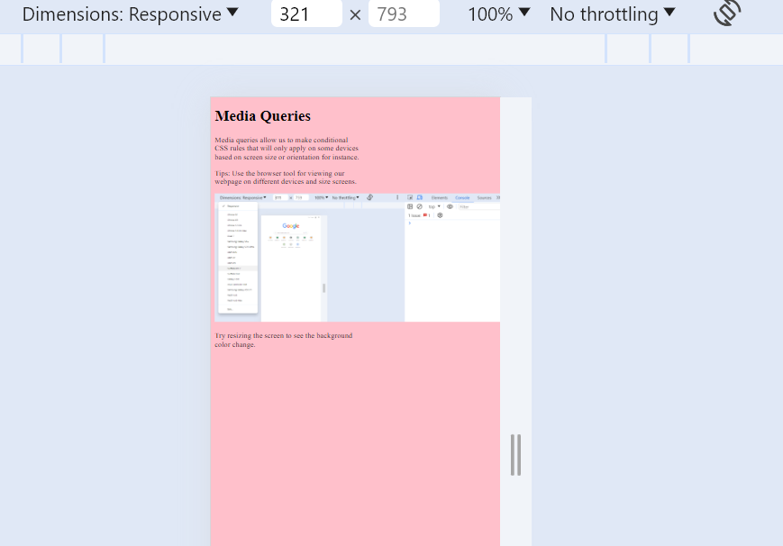

Media queries allow us to make conditional CSS rules that will only apply on some devices based on screen size or orientation for instance.
Tips: Use the browser tool for viewing our webpage on different devices and size screens.
Try resizing the screen to see the background color change.
